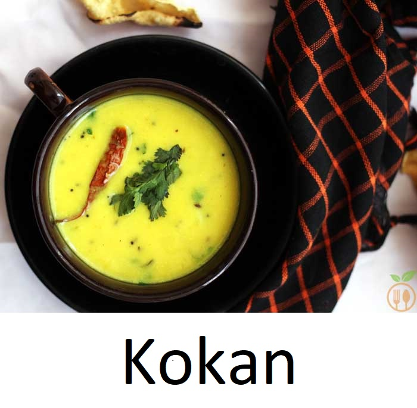

!NCRIDABLE MAHARASHTRA
Traditional Food in Maharashtra :

Here is a list of few incridible Maharashtrian Traditional dishes !
Pav Bhaji

Amchi Maharashtra food is incomplete without this dish which has come to be synonymous
to the state! Fresh and thick slices of bread, smothered in butter served with a delicious mix
of moderately spiced vegetables. This lip-smacking dish has won the heart of every Indian!
Vada Pav

Vada Pav can easily be called the Indian version of a burger! A delicious, spicy, deep-fried
patty made of potato is squeezed between a thick slice of bread, similar to a burger bun.
Between the vada (patty) and pav (bread) a spicy mix of spices and salt is sprinkled and
garnished with a fried, salted green chilli. Sounds perfect, isn't it? It's an all-day snack and
is extremely popular among Maharashtrians. It is very economical, filling and easily accessible.
Another popular offshoot is the Bhajiya Pav, which has batter-fried onions instead of the
Puran Poli

This delectable food item is a sweet version of the loving parantha. The stuffing is made
from jaggery (gur), yellow gram (chana) dal, plain flour, cardamom powder and ghee
(clarified butter). It is a popular dish in festive occasions and also can be eaten at any time
of the day. A tasty dessert does not need anyone's permission to be eaten!
Misal Pav

Misal Pav is quintessentially from Pune and is one of the most popular Maharashtrian
breakfast, snack or even brunch. It is a street food popularly found in Mumbai. It has a
spicy and tangy lentil curry which is made with moth beans and is served with Pav bread.
At times, it is eaten with yoghurt to lessen the spice. Although it is a breakfast food but
Maharashtrians enjoy it at time of the day. There are various types of Misal such as Puneri
Missal (topped with poha), Nagpuri Missal, Kolhapuri Missal and Mumbai Missal
which are very spicy.
Modak

Modak is one of the most famous sweet found in Maharashtra and is extensively eaten
during the Ganesh Chaturthi Festival all around the state. The sweet filling on the inner
part of a modak consists of freshly grated coconut and jaggery while the outer shell is made
out of rice flour and is very soft. With time, there have been varied types of modak such as
Kesari modak, dark chocolate modak, motichoor modak, paneer modak, dry fruit modak
and many more. This sweet is Ganpati's favourite and that is for a very definite reason for sure.
Bharli Vangi

This is a popular style of cooking brinjals or baby brinjals stuffed with coconut, onion,
jaggery, Marathi goda masala. Brinjal has never been anybody's favourite vegetable per se.
But this Maharashtra food dish has the capability to kick in life into this otherwise boring
vegetable. This combination of ingredients does wonders to the brinjal.
Sreekhand

Sreekhand is a sort of sweet yoghurt dish, flavoured with cardamom powder and saffron,
this dish is a hit at weddings and at the festival of Dushera. It is usually served with piping,
hot puris and is another Maharashtra food dish that is famous all over the country.
Poha

This chai-time snack which is made out of flattened rice is a favourite among every
Maharashtrian. A very versatile dish, poha can be prepared in numerous ways. The most
common variant is kanda poha which is made with onions. Other variants include batata
poha, poha prepared with diced potato, dadpe pohe which is raw poha prepared with fresh,
shredded coconut, green chillies, ginger and lime juice and lastly kachche pohe, raw poha
tossed in a mix of oil, red chilli powder, salt and un-sautéed onion. No matter which way
you choose to make it, poha will leave you craving for more!
Sabudana khichdi

Sabudana is ?sago? or tapioca starch. Khichdi roughly means ?mixture?. This unique dish
is a popular breakfast item in Maharashtra food and cuisine and is one of the few food
products which is consumed during the period of holy-fasting, ?upwaas?. The granular
texture of sago prepared in a savoury mix turns out to be a delicious dish indeed.
Rassa

Rassa or taambde or pandhra or varhadi is a non-vegetarian Maharashtra food dish made
with mutton, chicken, fish or any other seafood. It is originally from Kolhapur and means
a ?watery curry?, ras means juice hence rassa means a juicy preparation. Matnacha rassa
is a spicy red curry mutton preparation. Taambde rassa means red curry and is made out
of famous Kolhapuri chillies. Pandhra rassa is a yoghurt based white curry and is spiced
equally. Lastly, Varhadi rassa is a chicken curry originally from the Vidarbha region.
Sol Kadhi

Sol Kadhi is a very popular Maharashtra Food dish prepared with kokam in coconut milk.
This dish is common across Maharashtra, Konkan and Goan regions. Coconut milk spiced
with green chillies, kokum and fresh coriander, this dish screams freshness. A pleasant pink
coloured drink, sol kadhi is served as an appetizer and is hailed for its digestive qualities!
Pithla Bhakri

Pithla Bhakri is the recurrent ?comfort food? for most of the Maharashtrians. In fact, it is
also known as the Farmer's meal in the state. Mostly, the hot pithra is united with bhakri
and even roti at times as a reward after a long and tiring day at work. This simple dish
doesn't require either too many complex ingredients or a lot of time to prepare. Instead,
its the best dish to come up with when you are out of veggies. Mostly, pithla which is
served with rice has a watery-liquid like consistency and a semi-liquid or dry pithla goes
perfectly with bhakri or roti. A spicy version of the same is known as Zunka.
Basundi

Basundi is a sweet dish made in Maharashtra. It is condensed by boiling the sweetened
milk on low heat until it becomes half of its initial volume. Sugar, cardamom or saffron
is added to augment the flavour and texture. Different types of basundi are also created
such as custard apple basundi and angoor basundi (having small-sized rasgullas in basundi).
Kairi Cha Panha

Kairi Panha Cha is a traditional Maharashtrian raw mango drink and is enormously
famous during the summer season, used as a refreshment drink. Mostly the mangoes
chosen are Alphonso and Salem Gundu. This drink takes hardly 7 to 8 minutes to be
prepared and it works tremendously advantageous in relaxing someone when served chilled.
In order to improvise the drink, the cardamom is ground along with its peel to give a better
flavour.
Aamrus

Summer season is all about mangoes and aamrus is one of the favourite mango servings
in Maharashtra. The aamras is made from the mango pulp and is thick in texture. The pulp
is extracted by hand and it takes not more than 30 minutes to prepare. It is served with puris
or chapattis. At times, ghee or milk is added to aamrus to enhance its flavour.
Kadhi
Kadhi is an important constituent of Maharashtrian meal. It consists of thick gravy based
on chickpea flour and contains vegetable fritters known as pakoras. The yoghurt or Dahi
added to it gives it a sour taste but mostly in Maharashtra, sugar is added which makes it
taste sweet as well. It is a perfect dish during the summer season as it can be enjoyed the
most with steamed rice, or even moong dal khichdi to bring a change.